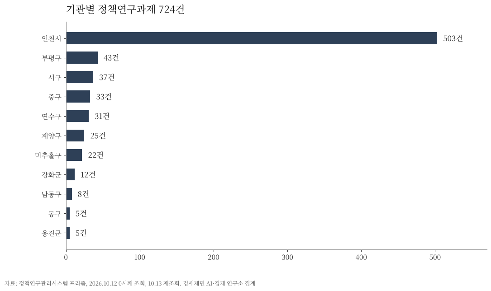

[정책브리핑] 인천시와 군·구는 무엇을 연구에 맡기나, 정책연구 727건을 다 세어 봤다
기본계획·종합계획·중장기계획이 134건, 열에 둘 가까이가 계획을 다시 쓰는 일
원가와 요금 과제가 34건, 군·구가 낸 것도 10건이다
새 이름의 네 구는 프리즘 0건, 나라장터에는 조사 용역을 이미 냈다
인천광역시와 종전 열 개 군·구가 정책연구관리시스템 프리즘에 올린 정책연구과제는 727건이다. 과제명에 기본계획·종합계획·중장기계획·발전계획이 든 과제가 134건으로 가장 많다. 새 정책을 찾는 연구보다 정해 둔 계획을 다시 쓰는 일이 앞선다는 사실로 짚는다.

1. 무엇을 어떻게 셌나, 자료와 방법
자료는 정책연구관리시스템 프리즘(prism.go.kr)의 공개 과제 검색이다. 관할기관이 인천광역시와 군·구인 과제를 2026년 10월 15일 17시께 모두 받았다. 검색어는 넣지 않았고 로그인도 하지 않았다.
모두 727건이다.

인천시 503건, 부평구 43건, 서구 37건, 중구 34건, 연수구 31건이다. 계양구 25건, 미추홀구 22건, 강화군 14건, 남동구 8건, 동구 5건, 옹진군 5건이 뒤를 잇는다.
10월 12일에 같은 방법으로 받았을 때는 724건이었다. 사흘 사이 중구가 1건, 강화군이 2건 늘었다.
프리즘 수는 등록에 따라 날마다 바뀔 수 있다.
2026년 7월 1일 중구와 동구가 폐지되고 제물포구·영종구·검단구가 생겼다. 같은 날 서구는 이름을 서해구로 바꿨다. 프리즘에서 네 이름으로 올린 과제는 10월 15일 현재 0건이다.
한계를 먼저 밝힌다. 프리즘에 등록한 정책연구만 잡히고, 등록하지 않은 소액 용역과 기술용역은 빠진다. 금액은 공개 검색에 나오지 않아 건수만 셌다.
유형은 과제명에 든 낱말로 셌다. 한 과제가 두 낱말에 걸리면 두 유형에 모두 넣었다. 그래서 유형별 건수를 더하면 727건을 넘을 수 있다. 연도는 프리즘의 연구 시작일 기준이다.
2. 분야와 유형으로 보면, 묻는 자리가 다르다
프리즘 분류로는 지역개발 120건, 일반공공행정 112건, 환경보호 107건이 앞선다. 수송·교통 82건, 문화체육관광 72건, 미분류 62건이 뒤따른다.
산업·중소기업 52건, 사회복지 52건, 농림해양수산 22건, 교육 13건이고 그 밖이 33건이다.
군·구 224건만 떼면 차례가 바뀐다. 미분류와 일반공공행정이 39건씩이고 환경보호 32건, 지역개발 27건이다. 사회복지 24건, 문화체육관광 23건, 수송·교통 15건이 이어진다. 시는 땅과 산업을 묻고 군·구는 조직과 살림과 복지를 묻는다.
과제명 낱말로 보면 계획이 134건, 방안과 전략이 103건이다. 타당성 56건, 평가와 성과 51건, 실태·수요·만족도 48건이 뒤를 잇는다. 원가와 요금은 34건, 경제자유구역은 14건이다.
어느 낱말에도 걸리지 않은 과제가 339건이다. 기록물 수집, 지역통계 작성, 디자인 개발, 회계감사, 고문헌 번역처럼 갈래가 제각각이다.
3. 과제명으로 보면, 열에 둘 가까이가 계획이다
가장 많은 것은 계획 수립이다. 기본계획·종합계획·중장기계획·발전계획이 든 과제가 134건으로 전체의 18.4%다. 2022년 이후 시작한 것만 44건이다.
상당수가 법령이 주기를 정해 둔 계획이다. 교통안전법은 시·군·구 교통안전기본계획을 5년 단위로 세우게 한다. 사회보장급여법은 지역사회보장계획을 4년마다 세우게 한다.
청년정책 기본계획, 평생학습도시 중장기 발전계획, 지역물류기본계획이 같은 줄에 선다. 인구정책 종합계획, 지능정보화 기본계획, 장애인 인권보장 기본계획도 그렇다.
주기가 정해져 있으니 언제 나올지 미리 안다.
부평구가 그 보기다. 제4차 교통안전기본계획 수립 용역은 2021년에 시작했다. 제5차 계획(2027~2031년) 수립 용역은 2026년 5월 27일 구청에서 착수보고회를 열었다. 다섯 해 간격이다.
남동구는 10월 8일 제5차 교통안전기본계획 수립 용역을 사업금액 2200만원 발주계획으로 나라장터에 올렸다.
과제명에 타당성이 든 것은 56건이고, 2021년 이후만 24건이다. 그 가운데 25건이 시설을 짓거나 기관을 세우기 전의 검토다.
우정통신박물관(2025년), 이민사박물관 확대(2024년), 시사편찬원 설립(2024년), 제2의료원(2022년)이 그 목록이다. K-바이오 혁신센터(2021년), 인천도서관(2020년), 삼산농산물도매시장 현대화(2020년)도 있다.
노동자 작업복 세탁소(2025년)처럼 규모가 작은 것도 같은 절차를 밟는다.
4. 원가와 요금 34건, 경제자유구역 14건
과제명에 원가나 요금이 든 과제가 34건이고, 2021년 이후만 18건이다. 준공영제 시내버스 표준운송원가 산정은 2017년, 2018년, 2021년, 2025년 과제가 올라 있다.
하수처리시설 관리대행 원가, 광역폐기물처리시설 반입수수료 원가가 뒤를 잇는다. 상수도요금 체계, 하수도사용료 현실화, 주정차 견인 원가도 있다.
시만의 일이 아니다. 34건 가운데 10건을 군·구가 냈다. 미추홀구가 3건, 연수구가 2건이고 중구·동구·부평구·서구·옹진군이 1건씩이다. 연수구의 송도 자동집하시설 운영관리비 원가(2024년)가 그 하나다.
과제명에 경제자유구역이나 IFEZ가 든 과제는 14건이다. 투자유치 전략(2020년)과 투자유치 효과분석(2023년)이 있다. 재정분석 중장기 발전전략은 2017년과 2022년 두 번, 지속가능 비전 2040은 2024년이다.
송도랜드마크시티 유한회사 재무·회계 조사도 2021년과 2022년에 올라 있다.
투자 유치의 성과와 재정을 바깥 눈으로 되짚는 일을 거듭 맡긴다.
5. 숫자가 말하는 것, 예측 가능한 일정표
지방정부가 바깥에 묻는 물음의 열에 둘 가까이는 「계획을 다시 써 달라」다. 새로 묻는 것이 아니라 주기가 돌아와 다시 묻는 것이다.
그래서 발주는 예측할 수 있다. 직전 차수가 언제였는지를 기관별로 모으면 다음 차수가 언제 나올지 나온다.
계약 방식도 함께 봐야 한다. 지방계약법 시행령은 추정가격 2000만원 이하 용역을 수의계약으로 맺을 수 있게 한다. 남동구 교통안전기본계획의 사업금액은 2200만원이다.
되풀이되는 원가와 요금 34건은 다른 이야기를 한다. 해마다 같은 일을 바깥에 맡기면 그 일이 행정 안에 쌓이지 않는다. 바깥에 맡기는 것이 옳은지, 안에 쌓는 것이 옳은지는 따로 따져 볼 일이다.
새 이름의 네 구가 프리즘 0건이라는 사실은 앞을 가리킨다. 교통안전법은 구청장에게 5년 단위 계획을 세우게 하고, 새 구도 예외가 아니다.
나라장터를 보면 새 구는 이미 움직였다. 제물포구는 7월 15일 주차장 수급·안전관리 실태조사(7442만원)를 냈다. 영종구는 9월 1일 해수욕장 이용환경 현황조사(3837만원)를 냈다.
제물포구 월미관광특구 진흥 5개년 종합계획(사업금액 1억1000만원)은 9월 29일 수정 공고를 내고 10월 13일 17시에 입찰을 닫았다.
인천시와 열 개 군·구가 법령과 조례로 묶인 계획의 직전 차수를 모으면 다음 차수가 돌아오는 때가 나온다. 그 차수표를 다음 호에서 만든다. 지방정부의 연구 발주가 예측 가능한 일정표라면, 그 일정표를 먼저 읽는 쪽이 준비할 시간을 얻는다.
확인하지 못한 것
과제별 금액. 프리즘 공개 검색에 나오지 않는다. 각 계획의 계획 기간. 프리즘 연구 시작일로 연도를 셌다. 부평구 제5차 교통안전기본계획의 수행기관과 계약금액. 보도에 나오지 않는다. 남동구 교통안전기본계획의 계약 방식. 발주계획 단계라 공고가 아직 없다.
참고문헌
「교통안전법」 제17조(지역교통안전기본계획). 국가법령정보센터, https://www.law.go.kr/법령/교통안전법/제17조
「사회보장급여의 이용·제공 및 수급권자 발굴에 관한 법률」 제35조(지역사회보장에 관한 계획의 수립). 국가법령정보센터
「지방자치단체를 당사자로 하는 계약에 관한 법률 시행령」 제25조제1항제5호나목. 국가법령정보센터
「인천광역시 제물포구·영종구 및 검단구 설치 등에 관한 법률」(법률 제21247호, 2025년 12월 30일 일부개정, 2026년 7월 1일 시행). 국가법령정보센터
「인천광역시 서구 명칭 변경에 관한 법률」(법률 제21734호, 2026년 6월 2일 제정, 2026년 7월 1일 시행). 국가법령정보센터
정책연구관리시스템 프리즘, 과제정보 공개 검색(관할기관 인천광역시와 군·구 11곳), 2026년 10월 15일 17시께 조회, https://www.prism.go.kr
남동구, 「제5차 남동구 교통안전기본계획 수립용역」 발주계획(R26DD20890187, 사업금액 2200만원, 2026년 10월 8일 게시). 나라장터, 집계 화면 https://sujubut.com/bid/domestic/3493246/
제물포구, 「2026년 제물포구 주차장 수급 및 안전관리 실태조사 용역」(사업금액 7441만8300원, 2026년 7월 15일 게시). 나라장터, 집계 화면 https://sujubut.com/bid/domestic/3155791/
영종구, 「2026년 해수욕장 이용환경 현황조사 용역」(R26BK01707318, 사업금액 3836만8000원, 2026년 9월 1일 게시). 나라장터, 집계 화면 https://sujubut.com/bid/domestic/3418676/
제물포구, 「월미관광특구 진흥 5개년 종합계획 수립 용역(수정)」(사업금액 1억1000만원, 2026년 9월 29일 게시, 10월 13일 17시 마감). 나라장터, 집계 화면 https://sujubut.com/bid/domestic/3472064/
시정일보, 「부평구 제5차 교통안전기본계획 수립 용역 착수보고회」, 2026년 5월 30일, https://www.sijung.co.kr/news/articleView.html?idxno=430428
※ 이 브리핑은 인공지능을 활용해 작성했습니다.
관련기사
- [거시경제] 이윤은 18.5% 늘고 임금은 1.9% 늘었다
- [가계부채 브리핑] 가계대출 9개월 만에 2조2000억원 감소, 주택담보대출은 3조3000억원 늘어
- 수출 1209억달러 역대 최대, 제조업 고용보험 가입자는 외국인 빼면 4000명 줄어
- 인천 신설구 100일, 법은 「지원하며」라 썼는데 개편 국비 예산은 두 해째 0원
저작권자 © AI경세제민 무단전재 및 재배포, AI학습 및 활용 금지